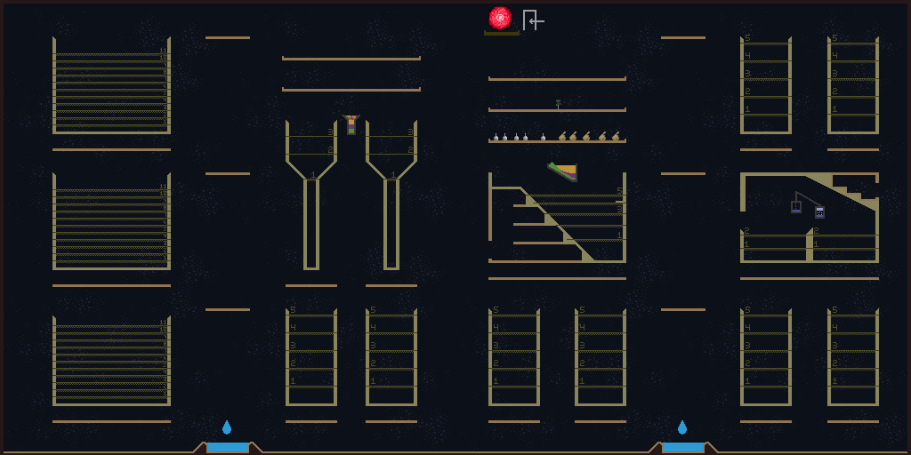

This perk is not avalible in the holy mountian, but is spawned just to the left of the mountain altar when the player submits their 11th (non-droplet) material in the material quest. Picking up the perk is optional.
Gameplay Effects
When picked up, personal lab will spawn a portal in all holy mountains near the entry location, and one near the mountain altar. These portals can be entered any number of times, and will never expire.
The Alchemy Lab
The alchemy lab contains
8 vats for alchemy and storage
a distillation setup
1 sloped reaction area for hard to mix materials
2 narrowing vats for density-based filtering
3 extra large vats for storing your favorite materials
2 pools of water to wash stains off in
5 shelves to store items
5 empty potions and pouches
a unique wand built for droplet-style material spells
a portal at the top to leave
The vats are made out of dense steel - so they will not be damaged by acid, lava, or concentrated mana. The floors of the vats are just thin enough the levitating against them with a potion held up will fill the potion.
